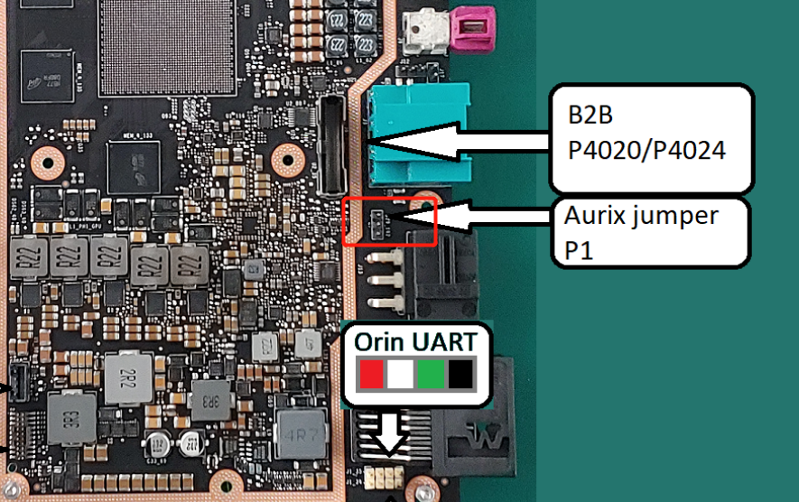

Flashing Basics
This topic provides guidance on flashing preprocessed binaries.
Flashing AURIX from NVIDIA Orin
You can use the nv_aurix_check_fw script to check the AURIX firmware version on boot.
The script is located at
- For QNX:
<top>/proc/boot/nv_aurix_check_fw.sh - For Linux:
<top>/etc/systemd/scripts/nv_aurix_check_fw.sh
- For QNX:
- If the AURIX firmware is the latest version, a corresponding message is displayed at the console.
- If the AURIX Main firmware version requires updating, the AURIX update command runs
automatically and updates the firmware to the latest version.
The correct hex file for flashing is chosen from the root filesystem at
/lib/firmware.
- After the Main AURIX firmware is updated, the version of the Update firmware is checked and the Update firmware is flashed if a newer version is found.
To check the firmware version again from the SoC:
-
Run the command:
- For QNX:
/bin/ksh /proc/boot/nv_aurix_check_fw.sh - For
Linux:
sudo /bin/bash /etc/systemd/scripts/nv_aurix_check_fw.sh
- For QNX:
To update the AURIX firmware:
- Ensure that both the Main (NV-IFW or AFW) AURIX firmware and the UPDATE(NV) firmware files are in the root filesystem.
Ensure that the files follow the naming convention as follows:
DRIVE-<branch>-<platform>-[NV/AFW]-Aurix-[UPDATE]-<Board>-<major>.<minor>.<revision>[-SNAPSHOT-<snapshot>].hexWhere:
- The path to the AFW firmware and UPDATE firmware is:
-
/lib/firmware/*<platform>-AFW-Aurix-* -
/lib/firmware/*<platform>-NV-Aurix-UPDATE*
-
NVindicates NVIDIA internal firmware.AFWindicates AUTOSAR firmware from the vendor Vector.<platform>is the board number, such as P3663.<FW_Type>is IFW / UPDATE / AFW.<Board>StepB.<major>contains one numeric digit.<minor>contains two numeric digits.<revision>contains two numeric digits.<snapshot>contains two numeric digits.- Items in brackets [ ] are optional.
- Version numbers with 1.x.x indicate internal firmware; 5.x.x is the AFW from vendor Vector.
- The path to the AFW firmware and UPDATE firmware is:
Update the firmware by running the command:
- For
QNX:
</bin/ksh/ /proc/boot/nv_aurix_check_fw.sh -auto_update
- For
Linux:
<sudo /bin/bash /etc/systemd/scripts/nv_aurix_check_fw.sh -auto_update
Where the path to the AFW and UPDATE firmware is as follows:
-
/lib/firmware/*<platform>-AFW-Aurix-*
-
/lib/firmware/*<platform>-NV-Aurix-*
Updating the firmware includes:
- Comparing the firmware version between the flashed version and the one on the root filesystem.
- Updating the firmware if a higher firmware version is in the root filesystem.
- Resetting the platform.
- For
QNX:
When the platform boots again, repeat the command to reset it a second time.
After two resets, the AURIX MAIN firmware is updated.
Rerun the command to update the UPDATE firmware.
Note:The AURIX flashing program/erase cycle is 1000. To avoid wear on the AURIX flash components, flash the firmware only when necessary.
The flashing of AURIX MAIN and UPDATE firmware requires a maximum of two SoC resets, and three invocations of the nv_aurix_update application.
- Board supports only the Vector AFW (Versions 5.x.x) and NV internal firmware (version
1.x.x). When the Vector AFW hex file is not packaged in the
/lib/firmwarefolder, the update script automatically chooses NV internal FW as an alternative.
Bind Steps for NVIDIA Orin System on a Chip (SOC)
For information about how to bind an NVIDIA Orin system on a chip, see AV PCT Configuration.
Flash Steps for NVIDIA Orin System on Chip (SoC)
Use the bootburn utility to flash platform boards with the boot loader, kernel, and file system. The bootburn utility is provided as part of the Foundation package.
Bootburn
Bootburn is a Python script that:
- Boots the device in the recovery-mode with RAMDisk
- Signs or generates the images on the host
- Transfers the images to target using ADB
- Flashes the boards
Bootburn automatically resizes the rootfs image on the target to optimize the available storage on the partition dedicated to it, either on eMMC or NOR.
Bootburn supports a host NFS share as the mount point for the target rootfs. This feature provides a convenient way for developers to copy files between the target and host for rapid development. In this case, the uncompressed target rootfs directory on the host is leveraged directly by the target.
Bootburn relies on the Foundation services to provide the flashing and boot loader functionality. You configure it with the CFG file rather than with bootburn command-line parameters; the bootburn utility supports limited command-line options.
Bootburn Command Usage
Run the bootburn.py script from a shell on your host Linux system by
executing the command:
./bootburn.py <options>Bootburn Options
|
Options |
Description |
|---|---|
|
-b <p3710-10-a01 | p3710-10-a03 | p3710-10-a04 | p3710-10-s05 | p3710-12-a01 | p3710-12-a03 | p3710-12-a04 | p3710-12-s05 | p3663-a01 | p3663-01-a02 | p3663-02-a02> (lowercase b) |
Provides the board name and revision. Possible board names include:
Not all boards are supported in Safety and Standard. For more information, see the API Reference. |
|
--board_config <board_name>.json |
Can be used with |
|
-d <partition_name> <dtb_file> (lowercase d) |
Specifies the DTB file to flash and the target partition. The
default file is defined in
Note: This option is not intended to specify kernel-dtb in Hypervisor. |
|
--encryption_key |
Takes as parameter the full file path and name. Secure boot
encryption key. Can be used with bootburn.py
and create_bsp_images.py. Additionally, edit
drive-foundation/tools/flashtools/flash/tegrasign_v3_oemkey.yaml
or
drive-foundation-safety/tools/flashtools/flash/tegrasign_v3_oemkey.yamlFind
"SBK". (#) is a comment in yaml files. Add the key that is needed:
Where |
|
-f (lowercase) |
Failure analysis (FA) mode support. |
|
--gpuvbios_fw |
Specifies the firmware to flash to the dGPU. |
|
-h (lowercase h) |
Provides guidance on the actions and options of
|
|
-i (lowercase i) |
File path to platform configuration file. If not provided for hypervisor configurations, then the tool expects the platform configuration file to be present in the hypervisor output directory. |
|
-k <configuration file> (lowercase k) |
Specifies the configuration file for flashing. |
|
-m (lowercase) |
Flashing Modular Diagnostic Software (MODS). This option enables mods-specific overrides. |
|
-o (lowercase o) |
Skips flashing of recovery partitions. Used by minicom. WARNING: If you are using minicom with -o option, minicom does not initialize the port and therefore does NOT check or acquire the lock files for the communication port. If minicom is running in the background and you run bootburn with the -x option, bootburn acquires the lock BEFORE accessing the communication port. So, when bootburn attempts to communicate with AURIX it fails. |
|
-p <key_file_path> (lowercase p) |
Signs the boot loader, secure OS (TOS), kernel and BCT
binary, then flashes the device.
|
|
--hsm <key_string> |
Can be used with --hsm rsa |
|
-q (lowercase q) |
Flashes QNX images. |
|
-s (lowercase s) |
Skips flashing the file system. Use the |
|
-t <output_directory> (lowercase t) |
Specifies the output directory where images to be flashed
onto the target are to be stored. The default directory is
named |
|
-x |
Specifies the communication port for AURIX to put the SoC in recovery mode automatically. With this Bootburn generates a unique ID from the target Inforom data. The allowed target ID list for the user provided board is generated from BOM data file included in the package. Bootburn aborts flashing if the target unique ID is not found in the list of generated unique IDs for the provided board name. This feature is supported on e3550b01 and e3550b03 boards with Inforom system object version 3 or above. Note:
On boards with inforom, the bct sku info is updated with the information in the inforom. If the Warning:
If minicom is used with the
|
|
-B <boot_device> (uppercase B) |
Specifies the boot device, which must be either qspi or emmc. qspi is the default. |
|
-C (uppercase C) |
Specifies use of debug binaries for the boot loader. |
|
-D (uppercase D) |
Directs |
|
-E (uppercase E) |
Enables DRAM ECC. |
|
-I <bus_id> <device_id> (uppercase I) |
Flashes a specific device when multiple devices are in recovery. To get the bus and device ID of each device in recovery, enter the lsusb command on the host. For example, if lsusb gives the following output:
Then flash the second device with the I option as in this example:
|
|
-L (uppercase L) |
Enables low-power modes. This option requires that the spe-fw and WB0 firmware packages be included in the bootburn configuration because low-power modes require them. |
|
-M (uppercase M) |
Specifies development version firmware. |
|
-R (uppercase R) |
Specifies RCM boot support, where the device boots without being flashed. When the target is in recovery mode, this option causes the flashing script to download all binaries, other than BCT, from the host. The target then reads the BCT from storage and other binaries from RAM. It boots the kernel directly on RAM. This option is much faster than when flashing also occurs. It is especially useful during debugging. Use the -R flag to initiate RCMBOOT with any of the commands mentioned in this table. |
|
-T (uppercase T) |
Enables tracing. Tracing logs are stored under the
|
|
--safety |
Execute bootburn scripts in safety mode. Only a limited set of options is available for use in safety mode. For more information, see the Safety Use Cases for Bootburn Scripts chapter in the NVIDIA DRIVE OS Safety Developer Guide for more information. |
|
-U |
Pass in the UFS provision configuration file. |
|
-V (uppercase V) |
Specifies read-back verification, where the binary images are read back (after writing) from the target's storage and compared with the original binary images. The two sets of images are compared to detect discrepancies. |
|
--customer-data |
Specified customer data such as skuinfo and others to be updated during flashing See flashing_customer_data.docx for information on how to use it. |
Passing Additional Parameters
To pass additional kernel parameters, modify the os_args parameter
of the kernel-dtb partitions in:
drive-foundation/
virtualization/pct/<pct>/qnx/qnx_<guest>/
qnx_vm1_storage_emmc.cfgFlashing with Docker
The DRIVE OS flashing Docker image contains a bash script called
flash.sh to flash the target.
Usage
./flash.sh [OPTION]... AURIX_PORT BOARD
| Argument | Description |
|---|---|
BOARD |
Specifies the target board base name being
flashed. Supported boards are p3710 or p3663. |
AURIX_PORT |
AURIX port is optional and may be specified if host has auto
detection issues. Provide a valid AURIX port as
|
Options
flash.sh has an option to override the following parameters:
| Option | Description |
|---|---|
--full=FULL |
Specifies whether to flash a single bootchain (FULL=false) or
both bootchains (FULL=true).
|
-h, --help |
Shows usage/help output and exits. |
Examples
- The following example attempts to flash a connected p3710 board and flash
the default Orin A.
# ./flash.sh /dev/ttyACM1 p3710 -
The following example attempts to flash a p3663 board connected to a
/dev/ttyUSB1AURIX port.# ./flash.sh /dev/ttyUSB1 p3663
Flashing AURIX
AURIX is intended for debugging and sanity checking purposes.
<top> refers to the root
directory of the guest VM.Flashing AURIX from Windows Host with Infineon Memtool
Step 1: Target Setup
On P3710
P3710 uses TOPO MCU to provide Aurix UART console access; you should connect microUSB to your windows host machine as shown in the following figures.
You should see a list of /dev/ttyACM*. Usually Aurix is the 2nd in the list of /dev/ttyACM*, which is /dev/ttyACM1 if starting from /dev/ttyACM0. You should find the Aurix console first before flashing.
On P3663
P3663 does not have TOPO MCU for Aurix UART console; instead, the Aurix UART signal (VCC/TX/RX/GND) is routed to the jumper below.
You should connect the Aurix UART console jumper to
- USB-UART cable
- Windows host
In Windows host, you should see /dev/ttyUSB* for Aurix console.
Step 2: Host Setup
Use a Windows machine for this upgrade.
- Download and install the latest memtool from Infineon.
- Use the UART cfg file below:If you use miniliggler to upgrade (a JTAG debugger), you should use the miliwiggler one.
[Main] Signature=UDE_TARGINFO_2.0 Description=TriBoard with TC39x B-Step (BSL/ASC) MCUs=Controller0 Architecture=TriCore Aurix Vendor=Starter Kits (Bootstrap Loader) Board= [Controller0] Family=TriCore Type=TC39xB Enabled=1 IntClock=100000 ExtClock=20000 [Controller0.Core0] Protocol=MMTC Enabled=1 [Controller0.PCP] Master=Core Enabled=0 [Controller0.Core0.MmTcTargIntf] MonType=ASC BaudRate=57600 PortType=COMX PortSel=COM4 ExecInitCmds=0 ReqReset=0 ReqResetMsg= ResetOnConnect=1 ResetWaitTime=500 ExtStartMode=0 KLineProt=0 UseRS232Drv=1 CanPortNum=1 AssureSendOfComPort=0 Stm32AscBaudrateForConnect=0 CheckAckCode=1 AlwaysEINIT=0 UseExtMon=0 MonitorPath= UseExtMon2=0 Mon2Path= Mon2Start=0xFFFFFFFF SCRMSupport=0 SCRMBaudRate=0 RSTCON_H=0x0 S0BRL=-1 UseChangedBaudRate=0 Sv2PLLCON=0x7103 Sv2ASC0BG=0xFFFF Sv2CANBTR=0xFFFF TcPllValue=0x0 TcPllValue2=0x0 TcPllValue3=0x0 TcAscBgValue=0x0 TcCanBtrValue=0x0 XC2000ScrmClock=40000000 MaxReadBlockSize=0 BootPasswd0=0xFEEDFACE BootPasswd1=0xCAFEBEEF AurixEdBootWorkaround=0 [Controller0.PFLASH0] Enabled=1 EnableMemtoolByDefault=1 [Controller0.PFLASH1] Enabled=1 EnableMemtoolByDefault=1 [Controller0.PFLASH2] Enabled=1 EnableMemtoolByDefault=1 [Controller0.PFLASH3] Enabled=1 EnableMemtoolByDefault=1 [Controller0.PFLASH4] Enabled=1 EnableMemtoolByDefault=1 [Controller0.PFLASH5] Enabled=1 EnableMemtoolByDefault=1 [Controller0.DF_EEPROM] Enabled=1 EnableMemtoolByDefault=1 [Controller0.DF1] Enabled=1 EnableMemtoolByDefault=0 [Controller0.DF_UCBS] Enabled=1 EnableMemtoolByDefault=0 [Controller0.Core0.MmTcTargIntf.InitScript] [FlashMod_DF_UCBS] Enabled=1
For UART, the TriBoard_TC39xB_ASC_BSL.cfg configuration file is located in the delivery folder.
P3710:
- Find the jumper below and insert JP 1-2 (short pin 1 and pin 2).
- Power cycle the P3710 system.
This can put Aurix into recovery mode. In this mode, Aurix console does not show any message.
Note: Close any tool that opening Aurix console before proceeding to the next step.
Step 3: Put Aurix into Recovery Mode
First put Aurix into recovery mode.
P3663:
- P3663 does not have TOPO, so you need to insert pin 1 and pin 2 for the jumper.
- Power cycle P3663.

Step 4: Connect Memtool to Aurix
To start the memtool,
- Choose Target > Change and select the folder where you have saved the configuration file in step 2.
- Select Triboard with TC39x (BSL/ASC) and click OK.
- Choose Target > Setup and select Remember device name (e.g. COM1).
- In Access Device, chose the COM port as identified in step 1.
- Add set DTR to the RTS/DTR Connect settings as shown below.
If you have tried to connect but failed. Restart memtool and P3710, and ensure you have this setting.
Step 5: Start Flashing
- Click Open File and select the file.
- Click Select All.
- Click Add Sel. >> to add all the file content to the flash area.
-
Click Program all to start the flashing.
The flash should start and finish.
Note: Do not use the Erase button in the memtool.
Flashing AFW from Orin Using Force Update
AFW can also be flashed using the update script from the NVIDIA Orin console.
- Internal firmware (IFW) version 1.46.4 or the latest
- Update firmware (UFW) version 1.46.4 or the latest
Command:
- For
Linux:
sudo /bin/bash /etc/systemd/scripts/nv_aurix_check_fw.sh -force_update AFW_Firmware_to_be_Programmed
- For
QNX:
/bin/ksh /proc/boot/nv_aurix_check_fw.sh -force_update AFW_Firmware_to_be_Programmed
sudo /bin/bash /etc/systemd/scripts/nv_aurix_check_fw.sh -force_update DRIVE-V6.0.0-P3663-AFW-Aurix-StepB-5.00.01.hex- On first execution of this command, control switches from IFW to UFW leading to NVIDIA Orin reset during switching.
- After NVIDIA Orin starts up completely, repeat this command, which starts AFW flashing.